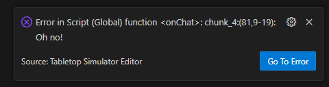

Error Handling
When an error occurs inside TTS it will be printed to the console and show a pop at the bottom of VS Code.

The popup also has a button which allows you to open the file and line where the error occured. There’s also the command "Go to Last Error" which opens the file where the last reported error occured, which is the same as clicking the button on the last shown popup.